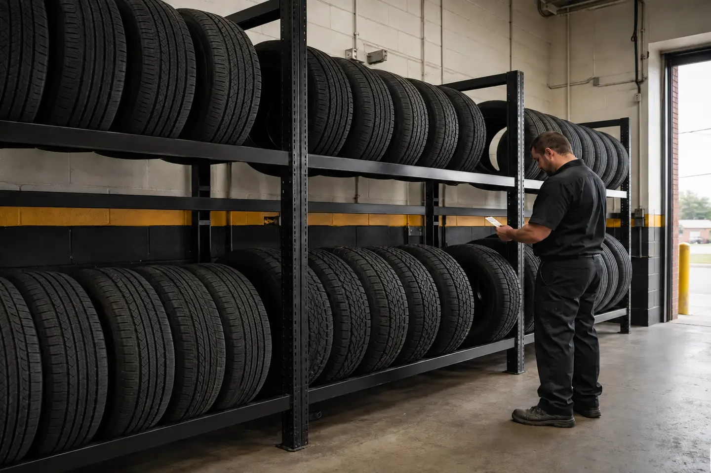

01
Everyday
Quiet, dependable all-season choices for daily commuting and mixed city-highway driving.
Not every driver needs the same tire. We’ll match the right size, capability, and price to your vehicle and the miles you actually drive.

We start with fit, then narrow the options around weather, mileage, road noise, performance, and budget. You get a short list that makes sense—not a wall of product names.
Quiet, dependable all-season choices for daily commuting and mixed city-highway driving.
Sharper steering response and confident grip for drivers who care about handling.
Durable options for heavier vehicles, towing, job sites, and rougher roads.
All-weather and winter-ready options when cold, rain, or snow demand more traction.
Before anything is ordered
Verified against your vehicle—not guessed from the tire already on it.
Matched to the load, weather, speed, and miles you expect.
Mounted, balanced, torqued, and checked before you leave.

Baltimore, Maryland
3401 Boston St
Baltimore, MD 21224
Mon–Fri
7:30 AM–6:00 PM
Saturday 8:00 AM–2:00 PM
Sunday closed